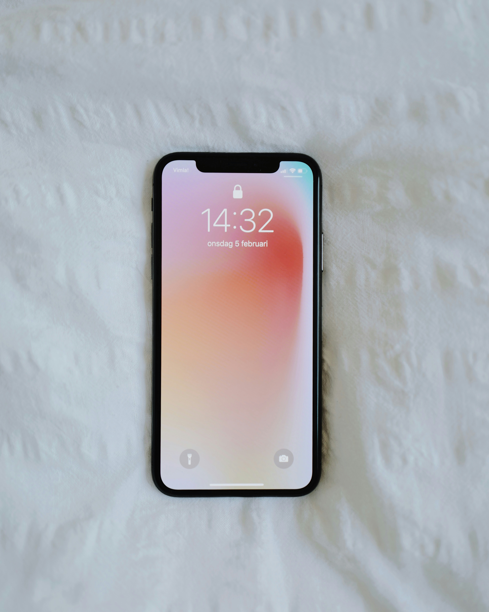

CASE STUDY BETWEEN GOOGLE LENS AND MOBILENET
GOOGLE LENSVS
Mobilenet
-
Test Image -

- Test Image -
-
Test Image -

- Test Image - 
- Test Image -
-
Test Image -

-
Test Image -

-
Test Image -

-
Test Image -

-
Test Image -

Output on GOOGLE LENS - Apples
Output on Mobilenet Model - golf balls
Result - Google Lens is more accurate
Output on GOOGLE LENS - Candle
Output on Mobilenet Model - Arrow
Result - Google Lens is more accurate
Output on GOOGLE LENS - coffee cup
Output on Mobilenet Model - vase
Result - Google Lens is more accurate
Output on GOOGLE LENS - smart phone
Output on Mobilenet Model - smart phone
Result - Draw
Output on GOOGLE LENS - chessboard
Output on Mobilenet Model - road
Result - Google Lens is more accurate
Output on GOOGLE LENS - clock
Output on Mobilenet Model - clock
Result - Draw
Output on GOOGLE LENS - glasses
Output on Mobilenet Model - glasses
Result - Draw
Output on GOOGLE LENS - guitar
Output on Mobilenet Model - chopstick
Result - Google Lens is more accurate
Output on GOOGLE LENS - pillow
Output on Mobilenet Model - bag
Result - Google Lens is more accurate
Output on GOOGLE LENS - spoon
Output on Mobilenet Model - spoon
Result - Draw
I have tested 10 images and Google Lens has proven to be more accurate than MobileNet by correctly identifying all of them unlike MobileNet.So to conclude, Google Lens is more accurate than MobileNet
Developed by Mahin